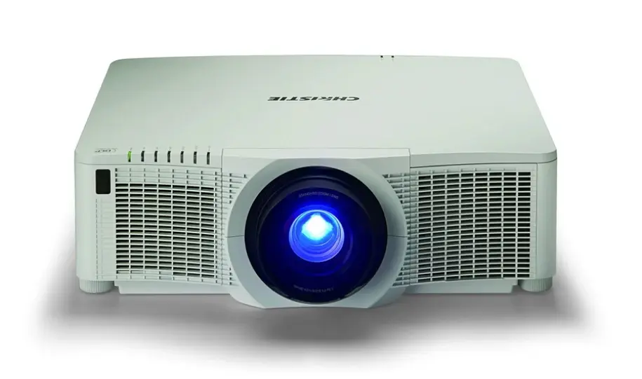

Проекторы для образования
Серии проекторов Christie для сферы образования сочетают практичность с лучшим качеством изображения в своем ценовом классе. Так, доступная серия GS для школьных классов создает живое изображение благодаря неприхотливому лазерному источнику света и особой технологии улучшения насыщенности цветов. Серия DS подходит не только для лекционных залов и аудиторий, но и для бизнеса благодаря сменным объективам, включая короткофокусные. Все проекторы серий отличаются компактными размерами, исключительной надежностью и универсальностью. К примеру, у проекторов нет фильтров, требующих регулярной замены, геометрию изображения легко адаптировать к конкретному помещению, а замена объектива занимает лишь несколько секунд.